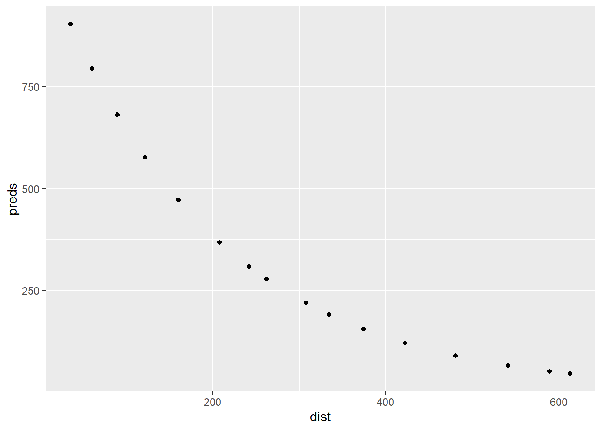

Assignment 2: Regression models, predicting from data
Annlaug Skarpeid, Mari Hebnes Tobekk, Emil Åberg, Emil Hosøy, Pia Julie Demler
Part 1: Lactate thresholds
Watt på 2 mmol
Watt på 4 mmol

Reliabilitet
Watt på 2 mmol: 309 - 5.45%
Watt på 4 mmol: 341.5 - 4.93%
Typical error: 16.847
Part 2: Predicting sizes of DNA fragments
Calibration model
read.csv("Results_DNA.csv") X.1 X Y
1 1 36.0 202.0
2 2 60.8 197.8
3 3 90.2 201.2
4 4 122.2 201.2
5 5 160.2 193.8
6 6 208.2 17.5
7 7 262.2 186.8
8 8 334.2 197.5
9 9 374.2 66.8
10 10 422.2 230.8
11 11 480.2 273.5
12 12 540.8 293.5
13 13 612.8 309.5
14 14 242.2 485.2
15 15 307.5 614.0
16 16 588.8 628.2ladder <- data.frame(dist = c(29, 43.5, 60.5,
80.5, 106.5, 141.5,
181.5, 243.5, 281.5,
328.5, 390.5, 465.5, 580.5),
mw = c(1000, 900, 800,
700, 600, 500,
400, 300, 250,
200, 150, 100, 50))
unknown <- data.frame(dist = c(36, 60.8, 90.2, 122.2, 160.2, 208.2, 262.2, 334.2, 374.2, 422.2, 480.2, 540.8, 612.8, 242.2, 307.5, 588.8))
cal <- lm(log(mw) ~ dist, data = ladder)
ladder %>%
ggplot(aes(dist, log(mw))) +
geom_point() +
geom_smooth(se = FALSE, method = "lm") +
labs(x = "dist",
y = "log(mv)")`geom_smooth()` using formula 'y ~ x'summary(cal)
Call:
lm(formula = log(mw) ~ dist, data = ladder)
Residuals:
Min 1Q Median 3Q Max
-0.054731 -0.040851 -0.001577 0.034241 0.063743
Coefficients:
Estimate Std. Error t value Pr(>|t|)
(Intercept) 6.9957281 0.0200403 349.08 < 2e-16 ***
dist -0.0052316 0.0000712 -73.47 3.69e-16 ***
---
Signif. codes: 0 '***' 0.001 '**' 0.01 '*' 0.05 '.' 0.1 ' ' 1
Residual standard error: 0.0432 on 11 degrees of freedom
Multiple R-squared: 0.998, Adjusted R-squared: 0.9978
F-statistic: 5398 on 1 and 11 DF, p-value: 3.691e-16preds <- exp(predict(cal, newdata = unknown))Predicted sizes
unknown %>%
ggplot(aes(dist, preds)) +
geom_point()
Part 3: Intepreting a regression table
Standard error er standardavviket av gjennomsnittene i en gruppe og standard error forteller oss hvor bra en modell er. En mer representativ prøve av en studie har mindre standard error. Standard error i vår modell er 0.08936. T-verdien blir brukt for å teste hypothesen og måler hvor stor forskjellen er i variasjonen i dataen. En høyere t-verdi betyr at det er med sannsynlig at null-hypothesen er sant. Vår t-verdi er -1.429. T-verdien blir brukt sammen med p-verdien. P-verdien forteller oss hvor sannsynlig det er at vår resultat er tilfeldig eller ikke. P-verdien i vår modell er 0.1646. Siden p-verdien er over 0.05 er ikke hypothesen vår signifikant og det er stor sannsynlighet at resultatene våre er tilfeldige.